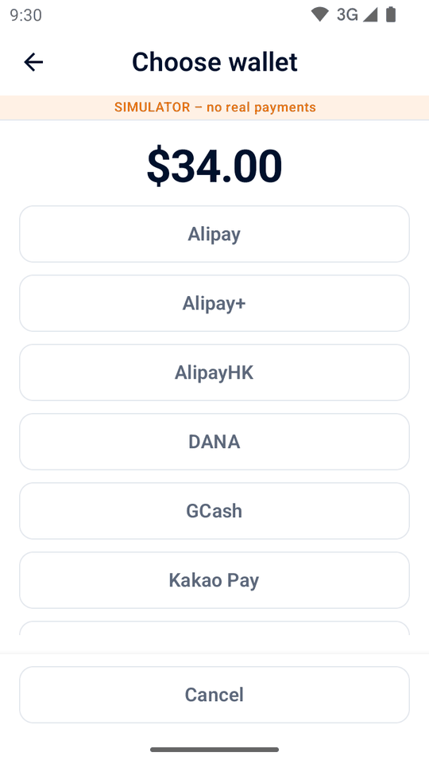
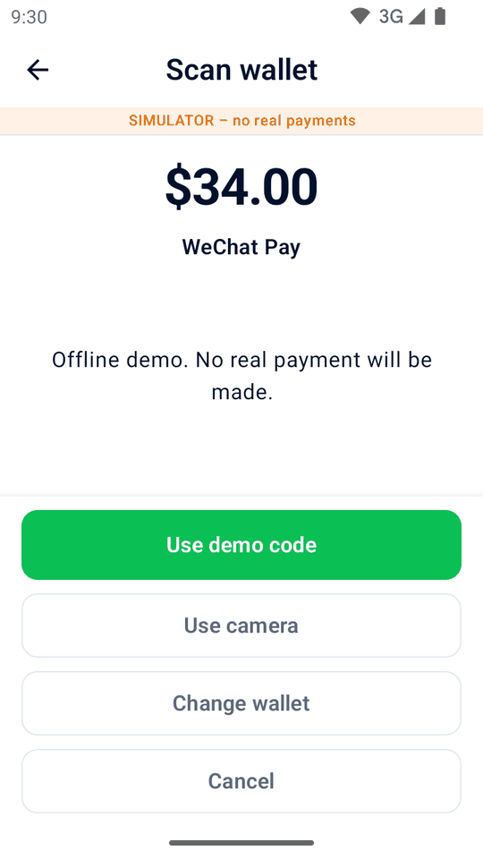

Guide
Using Mini mPOS
Step-by-step procedures for everyday work: take payments, refund, deliver receipts and close the day. Optional workflows follow at the end.
Prepare products, tax and staff access
Before you take real payments, complete the Adyen connection setup. You need a payment terminal or the Adyen Payments app. Then prepare your products, tax and staff access once.
Set the currency and tax
- In Settings › Payments, choose a Currency that your merchant account accepts for in-person payments.
- In Settings › Tax, check the rates, whether prices include tax or tax is added at checkout, and the default rate for new products.
Every product has a tax rate; use a 0% rate for untaxed items. Switching off Charge tax stops charging tax but keeps the rates.
Important
Changing the currency keeps the numbers in your prices; it does not convert them at an exchange rate. Check your product prices afterward.
Add products
- Open Products and tap +.
- Enter a name, price and tax rate. Optionally add a category and a barcode, typed or scanned.
- For a deposit, switch on Pre-authorization product so that it appears only in pre-authorizations.
Set staff PINs
- In Settings › Security, tap Set admin PIN. It protects Settings and Products. Choose how soon the app locks again.
- Optionally, tap Set Manager PIN. Staff then need it for refunds, cancellations, captures, amount adjustments and entering tips.
To replace or remove the admin PIN, use Change Admin PIN or Remove Admin PIN; removing it also removes the Manager PIN. Repeated wrong attempts lock PIN entry for a while. For a forgotten PIN, see PIN problems.
Take a card payment
- On Home, tap New sale. Tap products, tap Scan barcode, or add a Custom item.
- Tap Charge. Check the items, tax and total, and fill in any reference or email fields.
- Tap Pay. The terminal, or the Adyen Payments app with Tap to Pay, asks the customer to pay.
- Wait for the result. Do not start another payment until it appears.
- Give the customer a receipt with Print receipt, Email receipt or Share receipt, unless it was delivered automatically.
Note
The terminal reads the card; Mini mPOS never receives full card details. Depending on the terminal and your merchant account, customers can insert or tap a card, or tap a phone or watch. For contactless payments, the card or phone must stay near the contactless symbol until the terminal confirms. With Tap to Pay, follow the instructions in the Adyen Payments app.
Warning
Result unknown does not mean the payment failed. Check the original payment before charging again.
Customer references, card saving and tips are optional; see references and saved cards. To let customers pay on their own phone, use a payment link. If a payment is declined, see declined payments.
Scan a shopper wallet code
Use Scan wallet at sale checkout to read a payment code from the shopper’s wallet app. This is different from scanning a product barcode or a refund receipt. It works with a physical payment terminal, not Tap to Pay; wallet discovery needs an optional read role.
- Check the total and checkout fields, then tap Scan wallet. If receipt tipping is selected, confirm paying without it: the wallet charges the total immediately, not a pre-authorization.
- Choose the shopper’s wallet. A single available wallet is selected automatically. Only individually configured wallets appear; Alipay+ does not imply separate GCash, DANA, Kakao Pay or TrueMoney choices.
- On a confirmed scanner-equipped terminal, press its scan button. This may be the network/cloud terminal, not the device running Mini mPOS. To scan with the device’s camera instead, tap Use camera.
- Scan the shopper’s payment QR code or payment barcode. One valid scan starts payment immediately. Wait for the normal payment result and deliver its receipt.
Canceling keeps the cart and checkout fields. Invalid codes do not pay: scan again or change wallet. A native scan expires after 30 seconds; use Scan again or the camera. Leaving the app stops scanning; returning requires an explicit new scan. Codes cannot be typed or pasted.
Save card requests best-effort saving when shopper reference and consent allow it. Wallet support varies; only a returned stored-payment token means details were saved. An approved payment without a token is still approved. Handle wallet discovery or payment problems; never replace an unknown payment by scanning again.
The targeted wallets are GCash, DANA, Kakao Pay, TrueMoney, PayMe, Alipay, AlipayHK, Alipay+, WeChat Pay, PayPal and Venmo, subject to enabled POS configuration for the terminal’s store, country and currency. PayMe scanning is intentionally unverified despite Adyen’s published limitation; it may be rejected. Confirm your wallet setup and test behavior with the Adyen wallet guide and Adyen PayPal and Venmo guide.


English simulator demos in illustrated S1F2-style terminal frames. No real payments; simulator results do not establish provider or native-scanner support.
Refund or cancel a payment
- Refund
- For a charged payment. Returns all or part of the money.
- Cancel (void)
- For a held payment that has not been captured: tap Cancel pre-authorization for a deposit, or Cancel payment for a sale Awaiting tip. This releases the hold.
To refund:
- On Home, tap Refund and scan the refund QR code on the receipt, or open the original sale in History.
- Choose a full refund, an amount or individual items. Item refunds need the original sale on this device.
- Confirm the refund, and enter the Manager PIN if asked.
Every refund is linked to its original payment; refunds without one are not supported. Refund paid payment links in the Customer Area.
Important
Refund requested means Adyen received the request, not that the customer has the money. Check the final outcome in the Customer Area. If a refund's result is unknown, check it before retrying.
Print, email or share receipts
From a payment result or a History entry, tap Print receipt or Email receipt. Tablets and phones also offer Share receipt, which sends an image through Android's share menu. Printing needs a terminal with a printer.
Customize and test receipts
- In Settings › Receipts, enter your business details, header and footer. Or tap Import business details from Adyen to fill blank fields from your Adyen store. If the terminal has no store, only the legal name comes from your merchant account. This needs the optional Management API — Stores read or Account read role.
- Choose Print automatically after payment, when to print a Merchant copy, and whether to Show refund QR code.
- Tap Print test receipt and check the printout. The on-screen preview does not show the printer's exact layout.
Importing from Adyen fills blank fields only; it never replaces text you saved. Other options:
- Show tax amounts
- Shows the tax included in, or added to, the total. It does not change the tax charged.
- Show tax breakdown
- Lists the tax for each rate. Needed to show included tax when prices include tax.
- Show taxable totals by rate
- Groups item totals by tax rate, including 0%.
- Show references
- On by default. Prints the merchant reference and any customer reference, so that a receipt can be matched to its payment.
- Marked tax rate (%)
- Marks items at that rate with an Item marker and its explanation. Leave it blank for no marker.
- Characters per line
- 32 by default, for narrow receipt rolls. Choose the width for your printer with a test print.
Set the language
The app supports English, Simplified Chinese and Japanese. On Android 12 or earlier it follows the device language; on Android 13 or later, choose it in Android's per-app language settings. Adyen's card receipt lines follow the terminal's own receipt language. Test the printed layout, especially for Chinese and Japanese.
Set up email receipts
- Open Settings › Email (SMTP). Choose your provider, or enter the SMTP server, port, sender and login. Use STARTTLS or SSL/TLS.
- Send a test email.
- In Settings › Payments › Email receipts, choose when to ask for the customer's email and whether to send receipts automatically.
You can also enter SMTP details on a computer with the setup helper. Provider buttons fill in server details only. Follow your provider's instructions to allow SMTP and get the right password:
Mini mPOS uses password-based SMTP, not OAuth. Emails entered before payment are also sent to Adyen with the payment. Emails collected afterward are receipt-only.
If receipts do not print or send, see printer and email problems.
Find payments and close the day
History lists payments and refunds by day, with daily totals.
- Filter by sales, Awaiting tip, pre-authorizations, refunds or Needs attention, and use Payment method for a card brand or wallet.
- Search by reference, authorization code, customer reference or email, the card's last four digits, brand, wallet or exact amount. Every word must match:
visa 34finds Visa payments of 34.
On-screen totals follow your search and filters. Held payments, such as deposits and tips on the receipt, count as sales on the day their capture is accepted.
Close the day
- Open History, filter by Needs attention and resolve each entry; see unknown results.
- Check the Awaiting tip and pre-authorization filters. Enter tips, and capture or cancel deposits before their holds expire.
- Tap the print icon beside the day to print the Local daily summary.
- Reconcile with Adyen's reports in the Customer Area; see the Adyen settlement reconciliation guide.
The summary covers the whole day, ignoring filters: sales, tips included, accepted refunds, net, new holds and unresolved operations, for each currency. TEST and simulator activity is labeled. Paid payment links and captures without a known date are listed separately as undated activity.
Important
The Local daily summary covers only payments kept on this device. It is not Adyen's settlement and does not include other devices. The Customer Area is authoritative.
Warning
Switching between LIVE, TEST and the simulator permanently deletes all payment history and report data on this device. If unfinished payments exist, the app warns again: nothing is canceled at Adyen, but the local recovery and safe retry data is lost. Products and settings stay.
Use references and save cards
- Merchant reference
- To record a booking or order number, turn on Settings › Payments › Ask for a merchant reference. The number identifies the payment in Adyen. If left blank, a unique reference is generated.
- Shopper reference
- In Settings › Payments, choose the Shopper reference: a customer reference typed at checkout (the default), the customer's email, or none. It is sent to Adyen with every payment. Email references are hashed by default; use the same salt on every device.
- Saved cards
- With a shopper reference set, turn on Offer to save cards and choose the Recurring processing model for your Adyen setup. Get the customer's consent before selecting Save card for future payments. Mini mPOS cannot charge saved cards. For payment links, also check the card-saving API role.
Take payment with a link
Prerequisites
- Checkout API setup complete in Settings › Terminal (not needed for simulator demos)
- Your merchant account meets the Adyen Pay by Link requirements, including terms and conditions, before live use
- At a sale's checkout, tap Create payment link.
- Show the QR code, or tap Email link, Print link or, on a tablet or phone, Share link.
- Keep the link screen open to see the payment arrive, or later tap Check payment in its History entry.
- If the link is no longer needed, tap Cancel link.
The entry shows Awaiting payment until the link is paid, expires or is canceled. Set how long links work in Settings › Payments › Payment links. Links are for sales only, not deposits or tips on the receipt.
Important
Anyone with a real link can pay until it expires. Refund paid links in Customer Area › Payments › Payment list; the app cannot refund them.
In the simulator, demo links need no credentials. Tap Simulate payment to complete one. Their QR codes cannot take payments, and their receipts are labeled as demos.
If a link is missing or not updating, see payment link problems.
Hold and collect a deposit
Prerequisites
- Pre-authorization enabled by Adyen Support for your payment methods; see the Adyen pre-authorization guide
- Checkout API setup complete
A pre-authorization holds an amount on the card without charging it. Your whole account does not need manual capture; Mini mPOS requests it for these payments only.
- On Home, tap New pre-authorization. Choose a pre-authorization product, scan its barcode or enter an amount. Each pre-authorization has one item.
- At checkout, tap Pre-authorize. The receipt shows the amount held.
- When you are ready, open the entry in History and choose an action:
- Capture
- Collects the amount owed. A lower amount releases the rest; a higher amount first asks the card issuer to increase the hold. Refunds are possible once capture is requested.
- Adjust amount
- Changes the amount held without charging it. Submitting the same amount renews the authorization.
- Cancel pre-authorization
- Releases the hold. If the payment was already captured in the Customer Area, Adyen refunds it in full instead.
Capture requested is not final confirmation; check the Customer Area. For immediate answers to adjustments, enable Return adjust authorisation data as described in the Adyen authorization adjustment guide.
Warning
Holds expire. Check the pre-authorization filter daily and capture or cancel promptly. For failed or unknown operations, see capture problems.
Collect a tip written on the receipt
Prerequisites
- A terminal with a printer
- Pre-authorization and overcapture enabled by Adyen Support; see the Adyen receipt tipping guide
In Settings › Payments › Tipping, choose Enabled (default off) or Enabled (default on) to set how the checkout switch starts. Disabled, the default, hides it. Some debit cards and wallets do not support this flow.
- At a sale's checkout, switch on Tip on the receipt and tap Pay. The bill is held, not charged.
- Print the receipt. It has blank Tip and Total lines, and the merchant copy has a signature line.
- When the customer has filled it in, tap Enter tip on the result or in History's Awaiting tip filter.
- Enter the tip or the total, or tap No tip, and confirm.
The app captures the bill plus the tip. Tips over 20% first need the card issuer to increase the hold; if it refuses, enter a smaller tip or none. A saved tip cannot be changed. Before a tip is entered, cancel the payment instead of refunding it; afterward, refunds include the tip.
Warning
Enter every tip promptly, including zero tips, so the bills are captured before their holds expire. For failed or unknown captures, see capture problems.
Set up more devices and manage data
- On the configured device, open Settings › Data › Share with another device. Choose the catalog, settings and/or passwords and keys, then tap Show QR codes.
- On the new device, choose Set up from another device and scan all the codes, in any order. Choose whether to merge or replace its catalog.
- To copy passwords and keys, enter the transfer code shown on the first device. Tap Import.
- Check prices and tax, test the connection in Settings › Terminal, and print a test receipt.
The new device keeps its own payment destination, terminal, environment and Tap to Pay registration. A shared key works for another terminal only if Adyen assigns it the same key.
Important
This is a one-time copy, not synchronization or a backup of payment history. Each device keeps its own payments. Clearing the app's data in Android deletes all products, settings and history on the device.
In Settings › Data, set Keep transactions for or tap Clear settled history; unresolved payments are always kept. Install updates from the latest release in the same way as the original installation.
For import problems, see PIN and transfer problems.